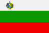

|
Länderinformationen Bulgarien
1. Das Wichtigste auf einen Blick2. Sehens- und Hörenswertes
3. Politik & Gesellschaft
4. Schmeckenswertes
5. Medien
6. Reisetipps
1. Wissenswertes
|  | Wir haben für Sie hier
Wissenswertes, Wichtiges, Kurioses, Interessantes und Kulinarisches
zusammengetragen. Dies und noch viele Informationen mehr rund um
Bulgarien, seine Sprache und die Menschen dort, soll Ihnen die
Reisevorbereitungen erleichtern und Ihnen einen Vorgeschmack dessen
geben, was Sie in Bulgarien erwartet. |
 Die
bulgarische Sprache
Die
bulgarische Sprache
Bulgarisch ist eine slawische Sprache und wird sprachwissenschaftlich zu den südslawischen Sprachen gezählt. Zusammen mit dem Mazedonischen bildet die bulgarische Sprache deren südostslawischen Zweig.
Gesprochen wird das Bulgarische weltweit von rund neun Millionen Menschen als deren Muttersprache, wovon freilich die überwiegende Mehrheit in der Republik Bulgarien lebt. Größere bulgarischsprachige Minderheiten finden sich zudem in vielen Ländern Süd-Osteuropas wie Griechenland, den Staaten des ehemaligen Jugoslawiens, Moldawien, Rumänien, Türkei oder der Ukraine. Aber auch in Westeuropa oder Nordamerika werden Sie auf Menschen treffen, die Bulgarisch sprechen und sich eine neue Heimat zum Arbeiten, Studieren oder fürs Leben fernab von Bulgarien gesucht haben.
Die ersten schriftlichen Zeugnisse der bulgarischen Sprache lassen sich bereits auf das 9. Jahrhundert n. Chr. datieren, was davon zeugt, dass sich das Bulgarische schon sehr früh als eigenständige Schriftsprache etablierte. Der Wortschatz des Bulgarischen ist meist slawischer Herkunft, es gibt aber auch eine ganze Reihe an Lehnwörtern, die aus dem Türkischen und Griechischen übernommen wurden.
Die bulgarische Sprache verwendet nicht das lateinische, sondern das kyrillische Alphabet. Um Ihnen das Erlernen und Lesen dieser Schrift zu erleichtern, haben wir für Sie eine Tabelle mit den kyrillischen Buchstaben des Alphabets und deren deutsche Entsprechung zusammengestellt.
Das
bulgarische Alphabet |
|||
А а |
A a |
П
п |
P
p |
Б
б |
B
b |
Р
р |
R
r |
В
в |
W
w |
С
с |
S
s |
Г
г |
G
g |
Т
т |
T
t |
Д
д |
D
d |
У
у |
U
u |
Е
е |
E
e |
Ф
ф |
F
f |
Ж
ж |
J
j wie in Journalist, Jazz |
Х
х |
Ch
ch |
З
з |
S
s |
Ц
ц |
Z
z |
И
и |
I
i |
Ч
ч |
Tsch
tsch wie in Rutsche |
Й
й |
J
j |
Ш
ш |
Sch
sch |
К
к |
K
k |
Щ
щ |
Scht
scht |
Л
л |
L
l |
Ъ
ъ |
A
a |
М
м |
M
m |
Ь
ь |
Weichheitszeichen,
meist jo |
Н
н |
N
n |
Ю
ю |
Ju
ju |
О
о |
O
o |
Я
я |
Ja
ja |
Einige Wörter, die Sie in Bulgarien hören werden, sind deutschen Ursprungs und haben Eingang in die bulgarische Sprache gefunden. Diese können Sie leicht erraten – Sie brauchen bloß die Buchstaben im Alphabet nachschlagen – und lernen so gleichzeitig die Buchstaben besser kennen:
Einige
bulgarische Wörter deutschen Ursprungs |
||
бормашина |
вундеркинд |
ландшафт
|
фойерверк |
цугцванг |
цайтнот |
щрудел |
циферблат |
лайтмотив
|
 Bevölkerung
Bevölkerung
Die Republik Bulgarien (Република България) hat heute eine Bevölkerung von rund 7,3 Millionen Menschen, was in etwa der Bevölkerungszahl der Schweiz entspricht. An ethnischen Minderheiten sind vor allem Türken (die knapp 10% der Bevölkerung ausmachen) und Roma (knapp 5%) zu nennen sowie kleine Gruppen von Armeniern, Griechen, Mazedoniern, Serben, Tataren und Walachen, die zusammen etwa 2% der Bevölkerung stellen.
Das Durchschnittsalter der Bulgaren liegt bei knapp 41 Jahren und ist damit nur unwesentlich niedriger als das der deutschen oder österreichischen Bevölkerung.
Die durchschnittliche Lebenserwartung beträgt in Bulgarien bei den Männern knapp 69 und bei den Frauen rund 76 Jahre.
 Fläche
Fläche
Das bulgarische Staatsgebiet umfasst eine Fläche von rund 110.000 km² und ist damit in etwa so groß wie Bayern und Baden-Württemberg zusammen.
Gemeinsame Landesgrenzen hat Bulgarien mit Griechenland (500 km), Mazedonien (150 km), Rumänien (600 km), Serbien (320 km) und der Türkei (240 km). Im Osten bildet das Schwarze Meer eine natürliche Grenze. Die Länge der bulgarischen Küste beträgt rund 350 km. Die durchschnittliche Bevölkerungsdichte des Landes liegt bei 70 Einwohnern pro km². Bulgarien ist damit wesentlich weniger stark besiedelt wie Deutschland, in dem durchschnittlich rund 240 Menschen auf einem km² leben.
 Währung
Währung
In Bulgarien wird mit dem Lew (Лев) bezahlt, welcher unterteilt ist in 100 Stotinki (Стотинки).
Nach einer Währungsreform wurde der Lew im Jahre 1999 zu einem Wechselkurs von 1:1 an die D-Mark gebunden. Seit der Einführung des Euro ist der Lew an den Kurs des Euro gebunden und entspricht exakt dem von D-Mark zu Euro (1 Euro = 1,96 Lew).
Mit der Einführung des Euro in Bulgarien ist aufgrund der ökonomischen Probleme des Landes nicht vor dem Jahr 2012 zu rechnen.
 Wirtschaftliche Situation
Wirtschaftliche Situation
Die bulgarische Ökonomie hat seit sich seit einer lähmenden Wirtschaftskrise in den Jahren 1996/97 wieder deutlich erholt und weist heute ein Wirtschaftswachstum von mehr als fünf Prozent auf. Tiefgreifende strukturelle Reformen und die nahezu vollständige Privatisierung der einst staatlichen Unternehmen haben hierzu entscheidend beigetragen. Jedoch ist Bulgarien bis heute das ärmste Mitglied der Europäischen Gemeinschaft - mit Löhnen, die nur etwa ein Drittel des durchschnittlichen EU-Einkommens betragen. So leben bis heute etwa 14 % der Bevölkerung unterhalb der Armutsgrenze.
Die wichtigsten Wirtschaftszweige stellen die Textil- und Schuhindustrie, -die Öl- und Gaswirtschaft, die Lebensmittelindustrie, die Chemikalien- und Metallherstellung sowie die Maschinenproduktion dar. Der Tourismus, der Jahr für Jahr zigtausende Urlauber nach Bulgarien lockt, ist ebenfalls eine wichtige Einnahmequelle und ist - gerade im Bereich der Schwarzmeerküste - einer der wichtigsten Wirtschaftssektoren. In der Landwirtschaft, in der bis heute fast zehn Prozent aller Beschäftigten tätig sind, werden vorwiegend Gemüse und Obst, Tabak, Wein, Weizen und andere Getreide sowie Sonnenblumen angebaut. Die Viehwirtschaft stützt sich in erster Linie auf Schweine, Geflügel, Schafe und Rinder.
Die wichtigsten Handelspartner Bulgariens sind Deutschland (mit dem mehr als 10 % des gesamten bulgarischen Auslandshandels abgewickelt wird), Italien, die Türkei, Griechenland und Frankreich.
 Zeitzone
Zeitzone
Bulgarien liegt in einer anderen Zeitzone als Deutschland, Österreich oder die Schweiz: Hier gilt die Osteuropäische Zeit, bei der der Zeitunterschied zur Mitteleuropa plus eine Stunde beträgt. Um Ihnen das ein wenig zu veranschaulichen: Wenn es bei Ihnen in Deutschland 12 Uhr mittags ist, zeigt die Uhr in Sofia bereits 13 Uhr an.
In Bulgarien gilt ebenfalls die Sommerzeit, so dass der Zeitunterschied ganzjährig derselbe ist.
Im nächsten Kapitel haben wir einige ausgesuchte Reiseempfehlungen zusammen gestellt.